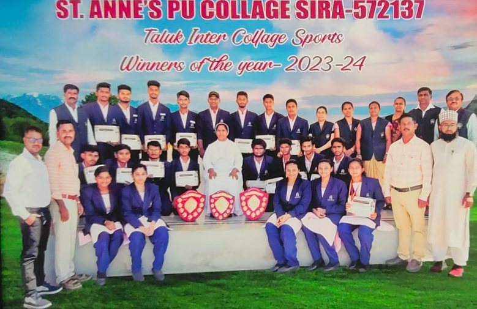
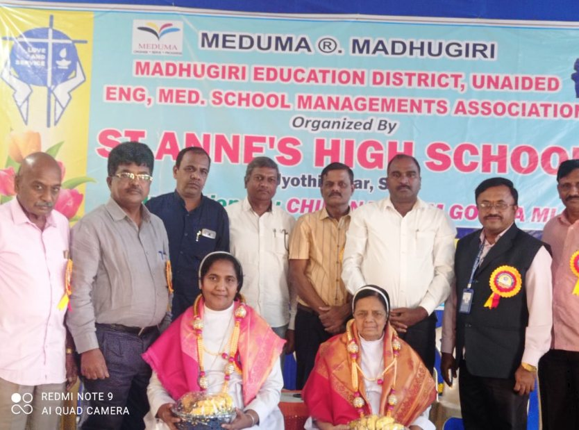
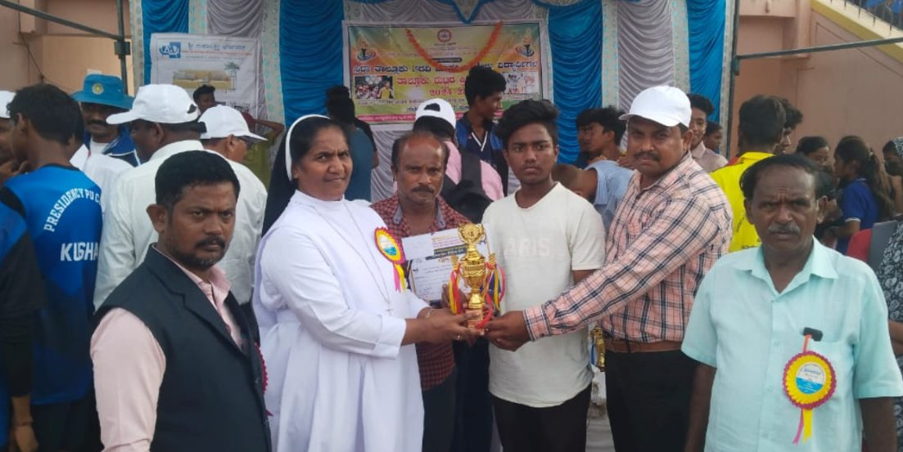
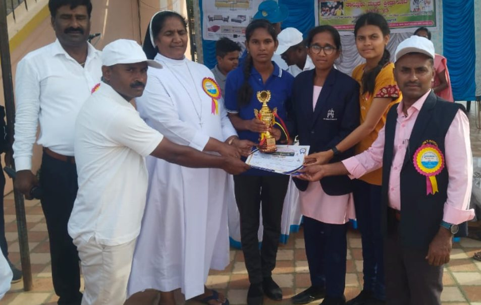
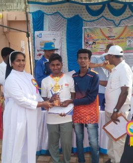
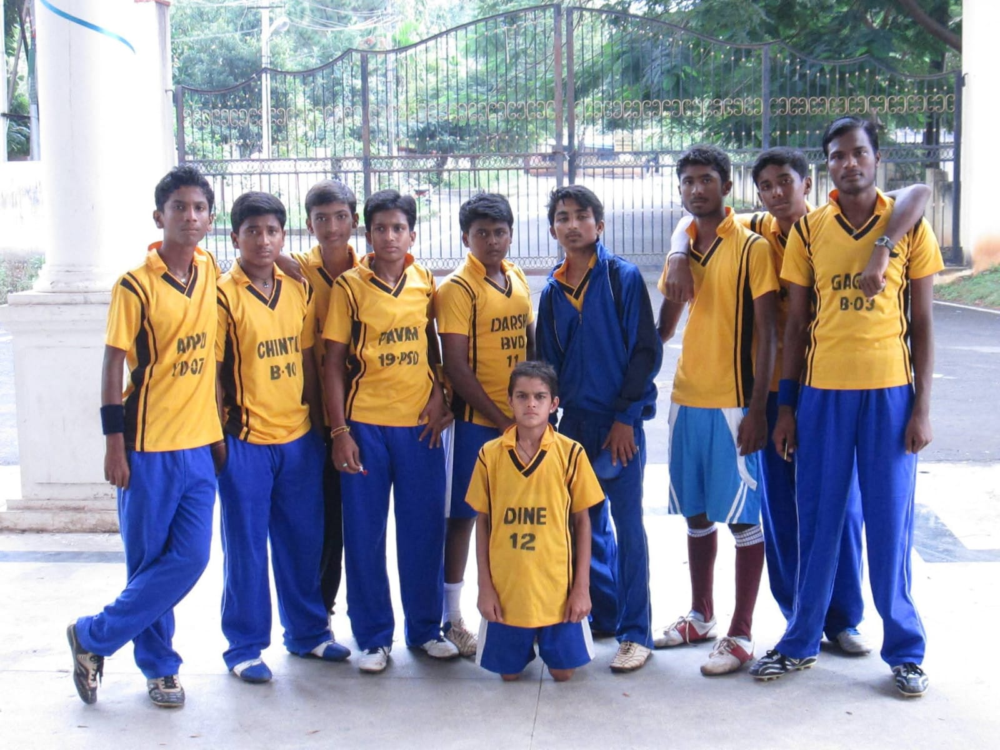
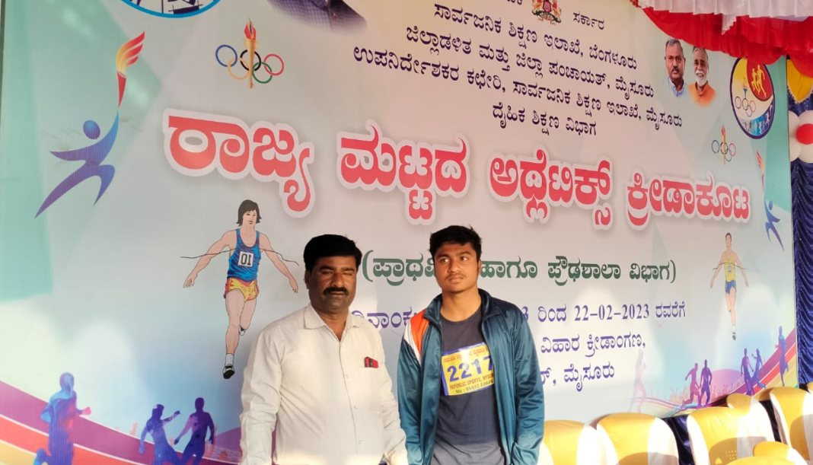

A spacious playground and sports facilities encourage physical fitness, teamwork and sportsmanship — producing achievers across athletics and team games.
Our achievers across athletics, football, volleyball and kabaddi over the years.
State Level Relay – 100 mtr State Level
Discus Throw
Football
4 × 100 mtr Relay
Discus Throw
4 × 100 mtr Relay
Football
Shot Put
Volleyball
Football
Football
Kabaddi
Volleyball
4 × 100 mtr Relay
100 mtrs Running
Volleyball
100 mtrs Running
Volleyball
Discus Throw
Football
Shot Put
Football
St. Anne's PU College, Sira lifted the shields as Taluk Inter-College Sports Winners 2023-24 — and our athletes brought home trophies and certificates across taluk and district-level meets.

Taluk Inter-College Sports Winners · 2023-24
Honoured at MEDUMA, Madhugiri
Trophy at the district meet
Girls' team champions
Individual trophy winner
Our team at the inter-college meet
State-level Athletics Meet · 2023A spacious playground and sports facilities support holistic education at St. Anne's.
At St. Anne's, every child is encouraged to discover their strengths — in the classroom, the laboratory and the playground.
See Academic Achievements →